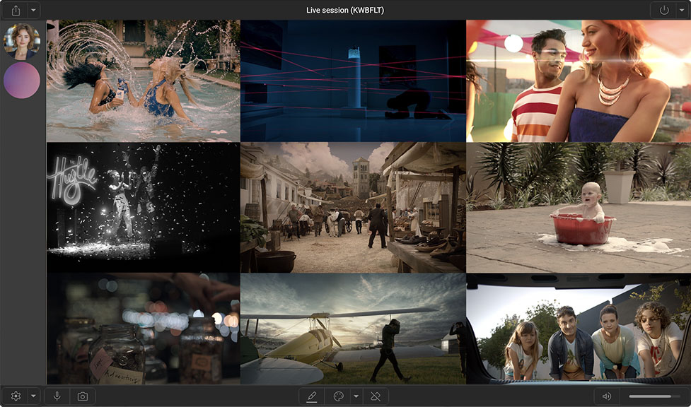

RPXL
Simple,
secure,
server less,
remote collaboration.
secure,
server less,
remote collaboration.
Using the incredible open source vdo.ninja software created by Steve Seguin, RPXL is an optimised and simplified front end focused for realtime, remote, editorial approvals.
Created as an alternative to server based messaging apps, vdo.ninja uses a peer to peer model allowing very low latency using webRTC and modern video codecs.
Bandwidth is concentrated on one, high quality primary video stream. With only minimal data used for communication between participants (typically between 30kbps to 90kbps per participant).

RPXL puts your work front and centre.
As this app is essentially server-less there are no costs in running this service.
So want to stream your timeline for to a remote client for quick feedback and approval? Go ahead.
Clients can login via desktop or mobile to view the stream, all they need supply is a username, we don't require registration or an email address. If they choose to share their microphone or camera they can talk and communicate with others in the room in real time to give feedback.
Even without a microphone or camera, clients can annotate directly on the stream and highlighting areas live or drawing boundaries for quick and accurate feedback, shared instantly.
Nothing to download, nothing to update.
Unlike Zoom or Teams wich require a server, all connections and encoding is handled by you, peer to peer, and are not routed through a central server for distribution.
Which means we don't see your data, we don't record your data and we don't use your data to train AI.
WebRTC was designed to be secure from the start and as such all transfers are encrypted using DTLS (Datagram Transport Layer Security) and SRTP (Secure Real-time Transport Protocol). Added to HTTPS encryption this guarantees any communication between you and your clients. STUN (Session Traversal Utilities for NAT) servers help devices behind NAT (Network Address Translation) determine their public IP address and port. This process facilitates peer-to-peer connections, even when devices are located in different network environments.
All this is handled invisibly and securely behind the scenes, this means your data is encrypted and stays encrypted.
Because all encoding is handled locally, the more clients connect, the greater the load on your machine, typically about a dozen clients should be fine.
The Streaming part of this app is desktop only, it won't work with mobile devices or tablets. We also strongly recommend using a wired ethernet connection as wifi has some inherit latency issues that can cause the stream to lag or drop out. Streaming and encoding can be offloaded to a separate machine if you want to keep your edit machine free of encoding duties.
In order to capture your video stream from your edit package you will either need a capture device (a cheap HDMI to USB capture device is fine) Blackmagic and AJA cards are not supported but the Blackmagic Web-presenter will work. An alternative is to use a virtual camera software such as OBS or NDI tools, they're free and they work very well.
We've had some issues with the colour fidelity with some of the cheaper capture cards, it appears they sometimes double up the LUT on footage, this can cause some pretty big colour disparities so be sure to test first.
Colour fidelity and audio sync are as good as can be expected within the browser realm, don't expect HDRI or 10 bit colour if you clients are on a cellphone connection, it's good, but it's not perfect. Audio sync can slip if the machine is overloaded or there is some network congestion, but generally it should be within 2 frames.
We prioritised speed and ease of use over absolute accuracy. This tool is not meant to replace file sharing tools such as frame.io or kollaborate but more to offer a higher quality alternative when presenting to smaller groups.
If you've read this far and still want to give it a go, use the button bellow to get started.

 Unlike Zoom or Teams wich require a server, all connections and encoding is handled by you, peer to peer, and are not routed through a central server for distribution.
Unlike Zoom or Teams wich require a server, all connections and encoding is handled by you, peer to peer, and are not routed through a central server for distribution.